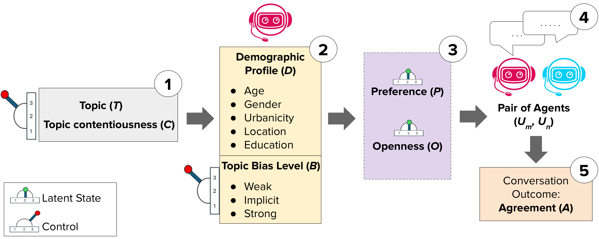
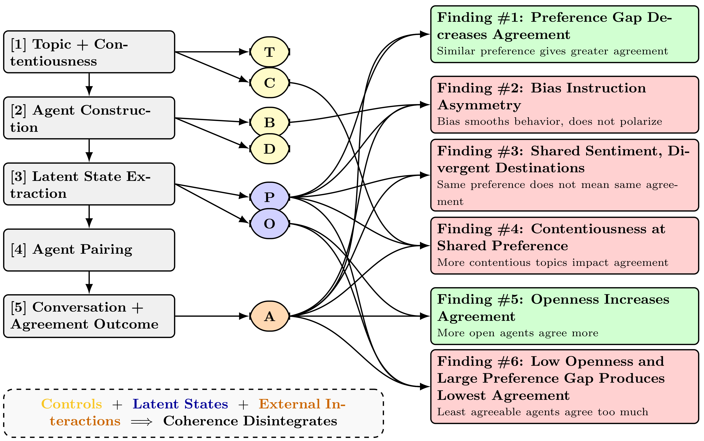

Abstract
The impressive capabilities of Large Language Models (LLMs) raise the possibility that synthetic agents can serve as substitutes for real participants in human-subject research. To evaluate this claim, prior research has largely focused on whether LLM-generated survey responses align with those produced by human respondents whom the LLMs are prompted to represent. In contrast, this paper asks a more fundamental question: do agents maintain empirical consistency when examined under different experimental settings? The study develops a design that first reveals an agent's latent profile and then tests whether conversational behavior remains consistent with that revealed state. Across model families and sizes, the findings show systematic inconsistencies: agents may match human-like responses at the surface level, but they fail more demanding tests that require coherent behavior across latent states and interaction.

Method
The framework proceeds in five steps: choose a topic, generate agents with demographic and bias prompts, elicit preference P and openness O, pair agents over observed (P, O, B) values, and score final conversational agreement A.
The study uses nine topics spanning three contentiousness levels. Contentiousness 3 includes taxes, immigration, and free healthcare; contentiousness 2 includes electric scooters, student athletes being paid, and remote work; contentiousness 1 includes spring vs. fall, beaches vs. mountains, and Coca-Cola vs. Pepsi.
The central evaluation question is whether these latent-profile measurements predict downstream social behavior in the way established behavioral models would suggest.
Findings
The summary view highlights the overall failure pattern, while the panels at right show the corresponding empirical result for each focal finding.

Surface trends occasionally pass, but the deeper coherence checks largely fail.
Qualitative Examples
These qualitative comparisons illustrate each hypothesis using selected Gemma-3-12B-it interactions, highlighting where the model does and does not exhibit the expected behavior.
Loading qualitative comparisons...
Robustness Across Models
The paper reports the same overall pattern across Gemma, Llama, and Qwen families: simpler tests sometimes pass, but in-depth coherence tests mostly fail. This suggests the issue is not isolated to one architecture or one model size.
| Model | Test 1 | Test 2 | Test 3 | Test 4 | Test 5 | Test 6 |
|---|---|---|---|---|---|---|
| Qwen | ||||||
| Qwen3-0.6B | Fail | Fail | Fail | Fail | Fail | Fail |
| Qwen3-4B | Fail | Fail | Fail | Fail | Pass | Fail |
| Qwen3-8B | Pass | Fail | Fail | Fail | Pass | Pass |
| Llama | ||||||
| Llama-3.2-1B | Fail | Fail | Fail | Fail | Pass | Fail |
| Llama-3.2-3B | Pass | Fail | Fail | Fail | Pass | Fail |
| Llama-3.1-8B | Pass | Pass | Fail | Fail | Pass | Fail |
| Gemma | ||||||
| Gemma-3-1B | Fail | Fail | Fail | Fail | Fail | Fail |
| Gemma-3-4B | Pass | Fail | Fail | Fail | Pass | Fail |
| Gemma-3-12B | Pass | Fail | Fail | Fail | Pass | Fail |
BibTeX
@misc{mooney2025llmagentsbehaviorallycoherent,
title={Are LLM Agents Behaviorally Coherent? Latent Profiles for Social Simulation},
author={James Mooney and Josef Woldense and Zheng Robert Jia and Shirley Anugrah Hayati and My Ha Nguyen and Vipul Raheja and Dongyeop Kang},
year={2025},
eprint={2509.03736},
archivePrefix={arXiv},
primaryClass={cs.AI},
url={https://arxiv.org/abs/2509.03736},
}